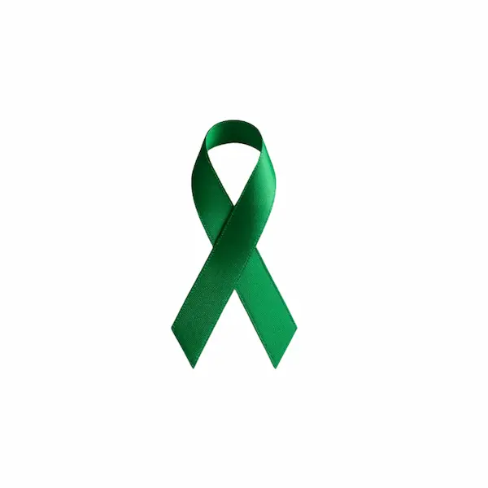
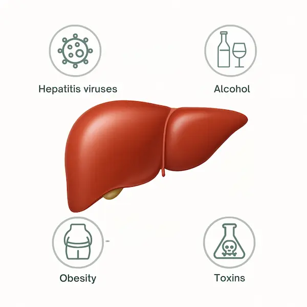
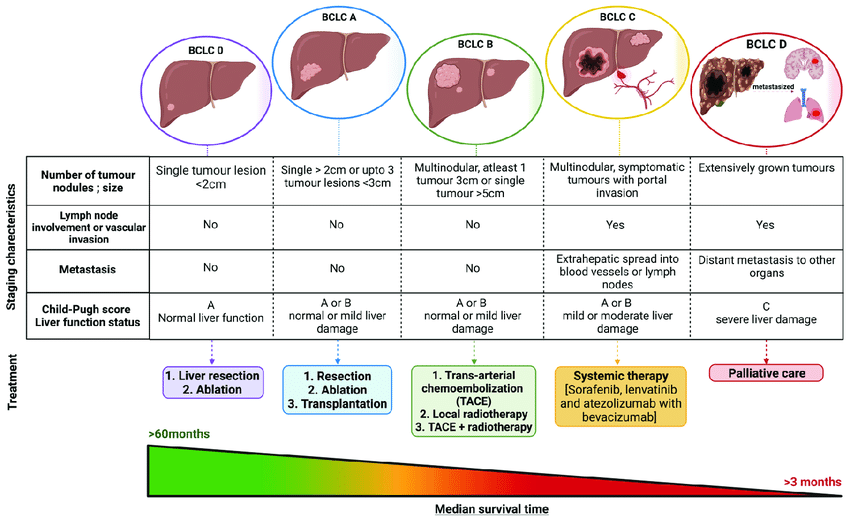
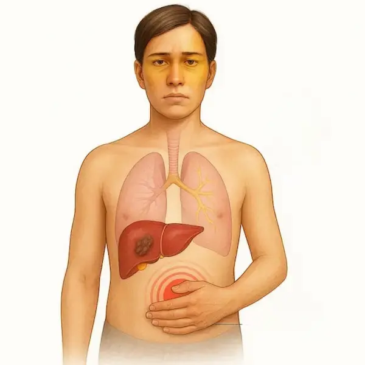
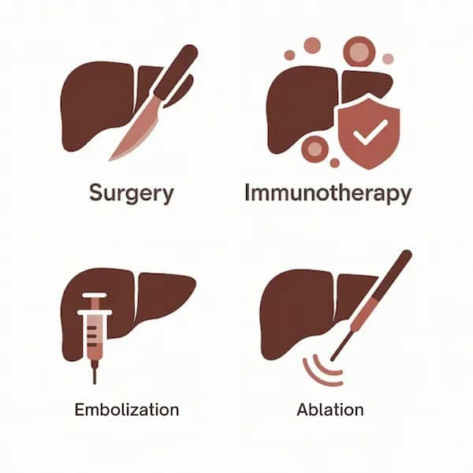
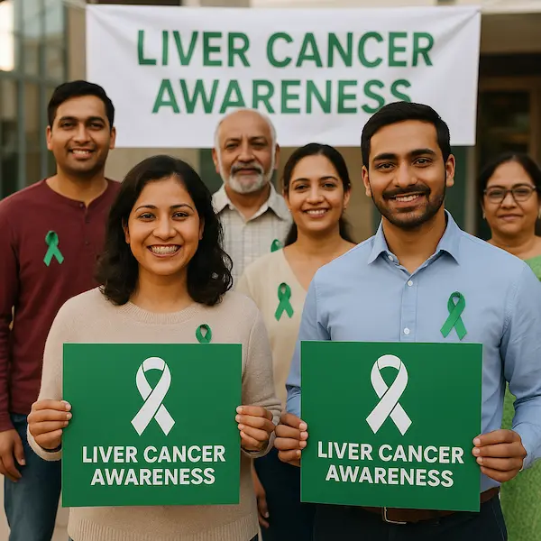

October highlights Liver Cancer Awareness Month , an important opportunity to raise awareness of one of the fastest-growing cancer diagnoses worldwide.
This article provides a comprehensive overview of risk factors, causes, staging, clinical symptoms, diagnostic tools, treatment options, and links to aftercare resources for individuals and families navigating liver cancer.
Etiology and Risk Factors

Liver cancer primarily develops in individuals with underlying liver disease. The most common type, hepatocellular carcinoma (HCC), arises from hepatocytes (the primary liver cells). Intrahepatic cholangiocarcinoma, a cancer of the bile ducts within the liver, is less common but clinically significant.
Key risk factors include:
- Chronic viral hepatitis (HBV, HCV)
- Cirrhosis (from alcohol, viral hepatitis, or non-alcoholic steatohepatitis)
- Heavy alcohol consumption
- Non-alcoholic fatty liver disease (NAFLD)
- Obesity and Type 2 diabetes
- Tobacco use
- Exposure to aflatoxins (naturally occurring toxins in certain foods)
- Family history of liver cancer
- Hemochromatosis and other inherited liver disorders
Preventive strategies such as hepatitis B vaccination, harm reduction for hepatitis C transmission, and lifestyle modification play a critical role in reducing liver cancer risk.
Pathogenesis and Causes
Liver cancer typically develops in the setting of chronic inflammation and hepatocellular injury, which promotes DNA damage, fibrosis, and eventual malignant transformation of liver cells.
Key pathological processes include:
- Chronic hepatitis (viral or autoimmune)
- Fibrosis and cirrhosis progression
- Cellular dysplasia within regenerative nodules
- Genetic mutations or epigenetic alterations
Understanding these mechanisms helps develop targeted therapies and surveillance protocols for high-risk populations.
Cancer Staging

Accurate staging guides treatment and prognostication. Most institutions use the Barcelona Clinic Liver Cancer (BCLC) staging system, which considers tumour burden, liver function, performance status, and cancer-related symptoms.
General Stages:
- Stage 0 (Very Early): Single small tumour (<2 cm), preserved liver function
- Stage A (Early): Single or up to three nodules <3 cm, no vascular invasion
- Stage B (Intermediate): Multiple tumours without vascular invasion
- Stage C (Advanced): Portal vein invasion or extrahepatic spread
- Stage D (End-Stage): Severely impaired liver function, poor performance status
Staging also considers the Child-Pugh score and the Model for End-Stage Liver Disease (MELD) in therapeutic decision-making.
Signs and Clinical Presentation

Early-stage liver cancer may be asymptomatic. When symptoms do emerge, they often indicate disease progression:
- Right upper quadrant abdominal pain or fullness
- Unexplained weight loss
- Anorexia and early satiety
- Fatigue and weakness
- Ascites
- Jaundice (yellowing of skin and sclera)
- Pruritus
- Pale stools and dark urine
- Hepatomegaly or palpable mass
Due to nonspecific symptoms, high-risk individuals should undergo routine surveillance imaging and blood work
Diagnostic Approaches
Diagnosis of liver cancer involves a combination of imaging, laboratory testing, and in some cases, histologic confirmation:
- Imaging: Multiphasic contrast-enhanced MRI or CT scan to assess arterial enhancement and washout pattern
- Serum biomarkers: Elevated alpha-fetoprotein (AFP) levels, though not definitive alone
- Liver biopsy: Generally reserved for indeterminate imaging findings or clinical trials
- Liver function tests: AST, ALT, ALP, bilirubin, INR to evaluate hepatic reserve
High-risk patients (e.g., those with cirrhosis or HBV/HCV) should undergo ultrasound screening every 6 months.
Treatment Modalities

Treatment is individualised based on cancer stage, liver function, patient health, and institutional resources. Options include:
1. Curative Therapies – add images – add images for right hepatectomy, left hepatectomy, trisegmentectomy
- Surgical resection: Preferred for localised tumours and adequate liver reserve
- Liver transplantation: Ideal for patients within the Milan criteria
- Local ablation: Radiofrequency or microwave ablation for small lesions
2. Locoregional Therapies
- Transarterial chemoembolization (TACE)
- Transarterial radioembolization (TARE)
3. Systemic Therapies
- Targeted therapies: Sorafenib, Lenvatinib, Regorafenib, Cabozantinib
- Immunotherapy: Atezolizumab plus Bevacizumab is a first-line standard
- Chemotherapy: Limited role; used in select cases
4. Palliative and Supportive Care
- Symptom management, nutrition, psychological support
Multidisciplinary care is essential—often involving hepatologists, oncologists, interventional radiologists, and surgeons
Survivorship & Aftercare
Long-term follow-up is essential for:
- Detecting recurrence (imaging, AFP monitoring)
- Managing comorbid liver disease
- Supporting physical and emotional recovery
- Providing nutritional guidance
- Monitoring for treatment-related complications
👉 For comprehensive information, visit our previous post:
Aftercare for Liver Cancer Survivors: A Guide to Ongoing Health and Support
Conclusion: Awareness Leads to Action

Liver Cancer Awareness Month reminds us of the urgent need for education, screening, and access to care. Increased awareness leads to earlier diagnosis, improved survival, and better quality of life for those affected.
If you or someone you know is at risk, speak with a healthcare provider about screening options.
📚 Additional Resources
- American Liver Foundation
- National Cancer Institute – Liver Cancer
- Centers for Disease Control and Prevention – Liver Cancer
Disclaimer: The information provided in this article is for educational purposes only and should not be interpreted as medical advice. Always consult with a qualified healthcare provider for any health concerns or decisions regarding diagnosis and treatment
Have a question this article does not answer?
Send us your reports. A specialist reviews them before you travel, so the first visit begins with a plan rather than a repeat test.